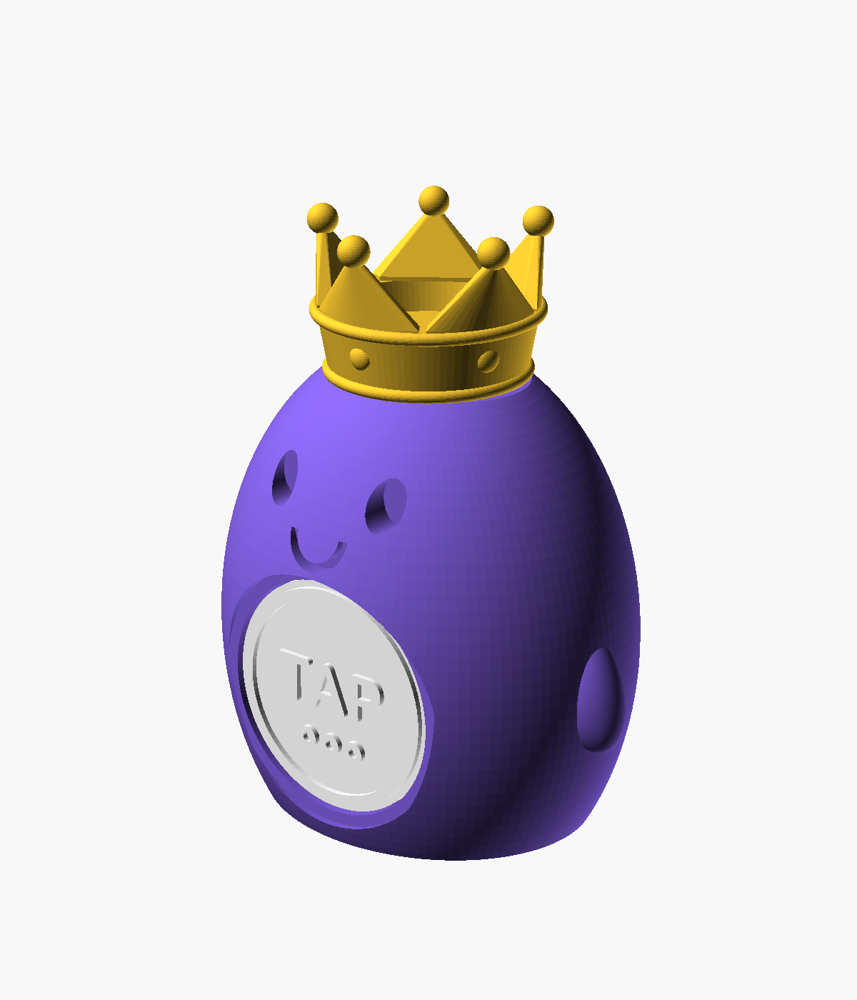
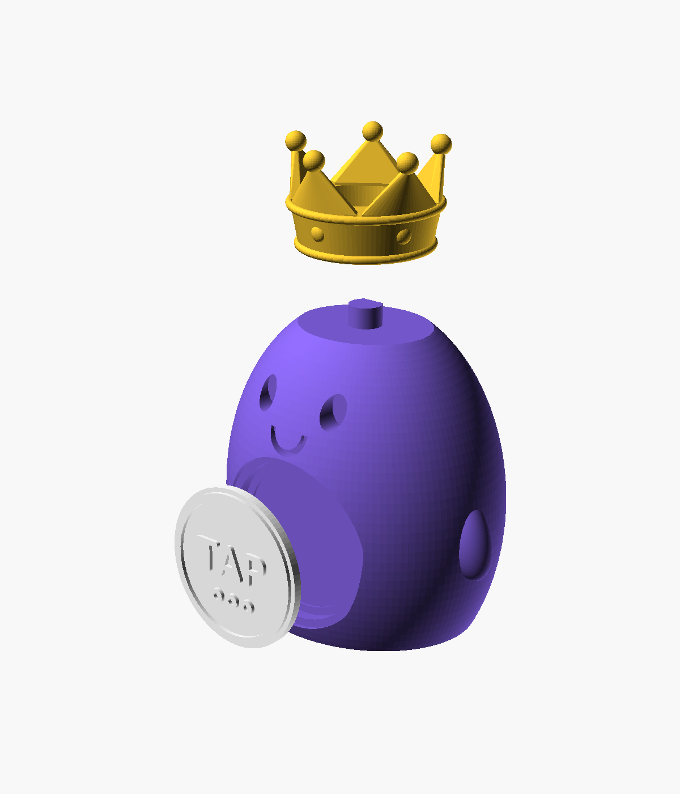
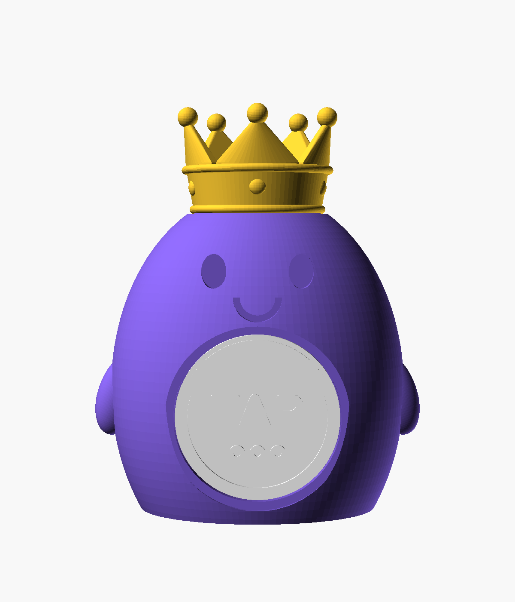
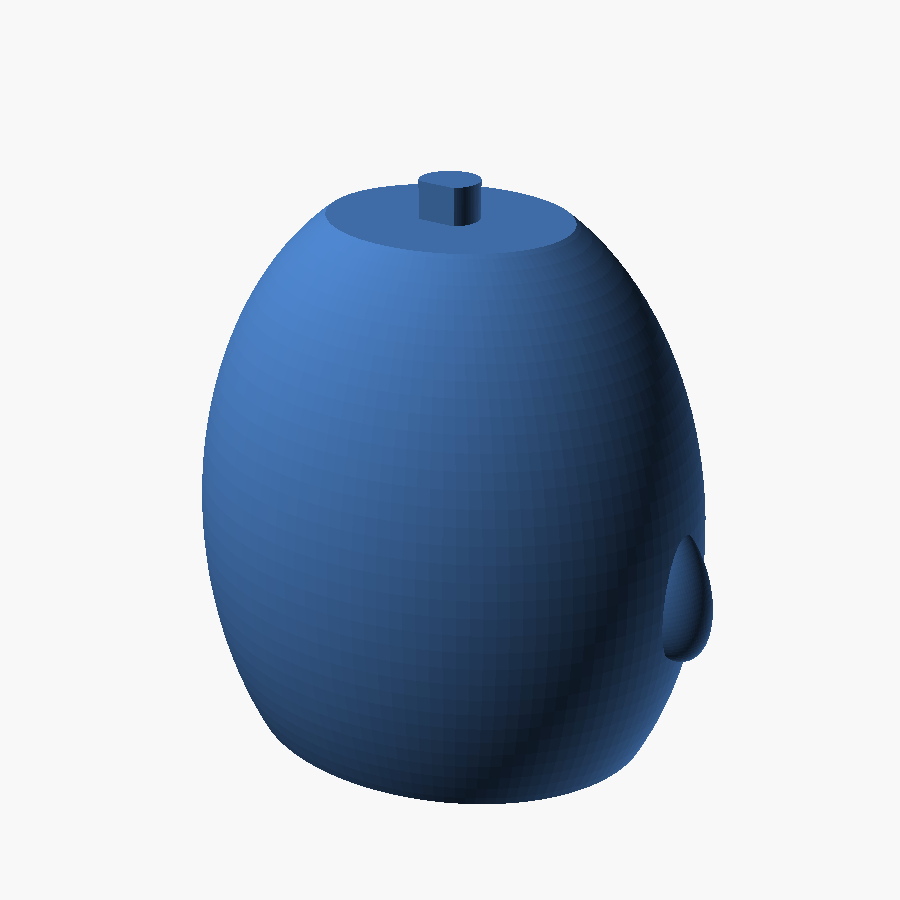

At a glance
70 mmwide
86 mmtall with crown
34 mmTAP badge
2.6 mmtag to phone
Colors
Body — FavCircles purple
Crown — gold
Badge — white with purple lettering
How it works at the register
- NTAG215 sticker sits behind the belly badge, programmed with the store's register tap link.
- Customer touches the top edge of their phone to the belly.
- Earn or claim — same as the Register sticker today.
Other cities, same body
- Nashville — cowboy hat
- Austin — boots or a bat
- New Orleans — jazz hat
- Raleigh — acorn cap (City of Oaks)
- Chicago — deep-dish hat
Printing
- PLA, 0.2 mm layers (0.12 for badge and crown), 15% infill.
- Body upright, no supports (arms may want build-plate supports).
- Badge two-color: swap filament at 1.8 mm.
- Files:
stl/body.stl,stl/crown.stl,stl/badge.stl